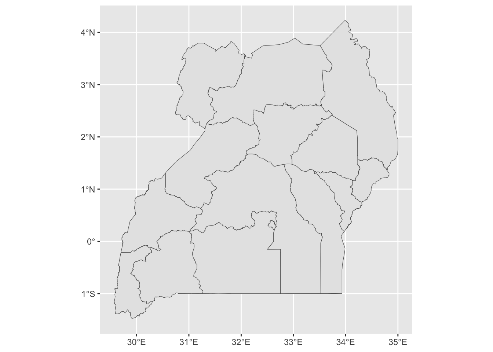
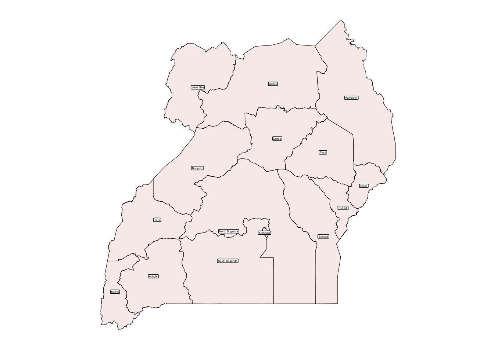
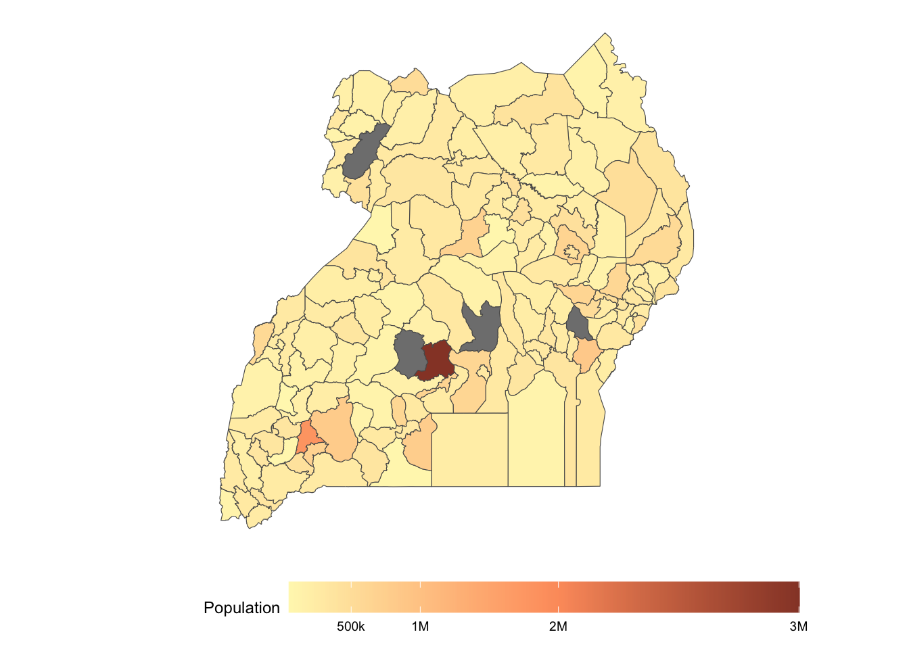

if (!require("pacman")) install.packages("pacman")
pacman::p_load(ggplot2, sf, readr, dplyr , here , ggthemes)Adding Data to Maps in R
R
Maps
This guide will walk you how to add data to your Maps
Github Repo : HERE
Required Packages
Before starting, install and load these essential R packages. The installation uses the Pacman package
Import Shape Files
Similar to the previous blogs , lets load the shape files.
regions_sp <- read_rds(here(
"blog/Maps/data/regions_sp.rds"))
district_sp <- read_rds(here(
"blog/Maps/data/district_sp.rds"))
water_sp <- read_rds(here(
"blog/Maps/data/water_sp.rds"))Uganda’s Region Map
ggplot()+
geom_sf(data = regions_sp)
Theme the Map
regions_map <- ggplot()+
geom_sf(data = regions_sp,
, color = "black",
fill = "#f8edeb") +
geom_sf_label(data = regions_sp, aes(label = F15Regions), size = 1) + # Adjust size as needed
theme_map()
regions_map
Download Data
For this example lets work with the 2024 census Data. The data is in the github repo.
poln <- read_rds(here(
"blog/Maps 2/data/poln_2024.rds"
))Explore the Data
head(poln, 6)# A tibble: 6 × 3
district villages poln
<chr> <dbl> <dbl>
1 ABIM 576 161100
2 ADJUMANI 211 179000
3 AGAGO 1147 292000
4 ALEBTONG 726 255800
5 AMOLATAR 581 139500
6 AMUDAT 416 286800sample(poln$district, 10) [1] "KITAGWENDA" "KALUNGU" "MBARARA CITY" "NABILATUK" "MBALE CITY"
[6] "KYEGEGWA" "NAKASEKE" "MUBENDE" "BUNYANGABU" "KAPELEBYONG" Adding Data to Maps
plot_data <- district_sp |>
left_join(poln , by = join_by(
District == district
))Plot the Map
I created bins for the district populations
ggplot() +
geom_sf(data = plot_data, aes(fill = poln)) +
scale_fill_gradient2(
low = "#FFF7BC",
mid = "#FD9C6B",
high = "#8B3A2B",
midpoint = 2000000,
breaks = c(500000, 1000000, 2000000, 3741000),
labels = c("500k", "1M", "2M", "3M"),
name = "Population"
) +
theme_map() +
theme(
legend.position = "bottom",
legend.key.width = unit(2, "cm")
)